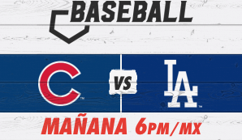
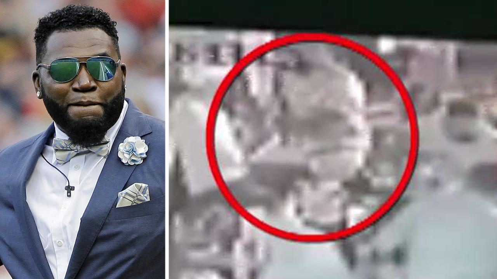
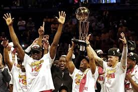
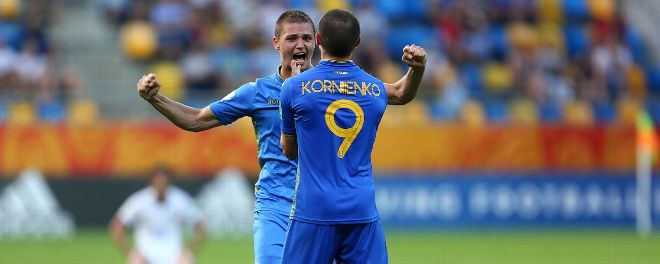

|
Usuario: Contrasena |
Caso de David Ortiz, atacantes cobraron $7.8K dolares por matar a David Ortiz. | |
|
 Toronto Raptor, Campeones de la NBA Jueves 13, ESPN News _________________________________ David Ortiz. En pronta recuperacion dar su primero paso despue de la segunda cirugias. Viernes 14.Boston News. _________________________________ |
 |
|
| SANTO DOMINGO, Republica Dominicana -- Siete mil ochocientos dolares -poco mas de 400 mil pesos dominicanos- fue lo que cobro un grupo de delincuentes para intentar quitarle la vida al ex pelotero dominicano David Ortiz, informaron el miercoles las autoridades de la isla caribena. | ||
| Toronto Raptor, Campeones de la NBA 2019 | ||
|  | ||
|
OAKLAND, California. - En su oficina con vista al centro de Toronto en enero de 2015, Masai Ujiri, entonces gerente general de un sorprendente equipo de Toronto Raptors con marca de 24-9, recordo una improbable mejora de 13 meses que comenzo con el intercambio de Rudy Gay a los Sacramento Kings a fines de diciembre de 2013, cuando los Raptors tenian apenas 7-12. |
||
| En Vivo la seleccion de Ucrania en el partido mundial de Futbol | ||
|  | ||
| La seleccion de futbol de Ucrania es el equipo representativo del pais en las competiciones oficiales. Su organizacion esta a cargo de la Federacion de Futbol de Ucrania, perteneciente a la UEFA |